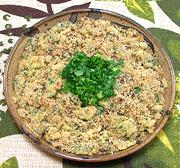

|
Farofa with EggsBrazil - Farofa de Ovos | ||||
| Serves: Effort: Sched: DoAhead: |
3 break ** 25 min Most |
Farofa is a wildly popular side dish in Brazil, but it can be used as the basis of more complex dishes suitable for Breakfast or as a Light Lunch. The Farofa itself can be made even a couple days ahead and refrigerated. | |||
|
1-1/4 ------- 4 2 2 1/2 1/2 ------- 2 2 |
c --- lrg T T t t --- oz T |
Farofa (1) -- Eggs Eggs Parsley Parmesan Salt Pepper -- Scramble Onion Butter |
Do-Ahead - (40 min)
|